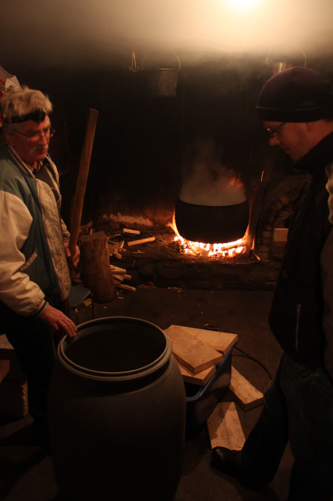
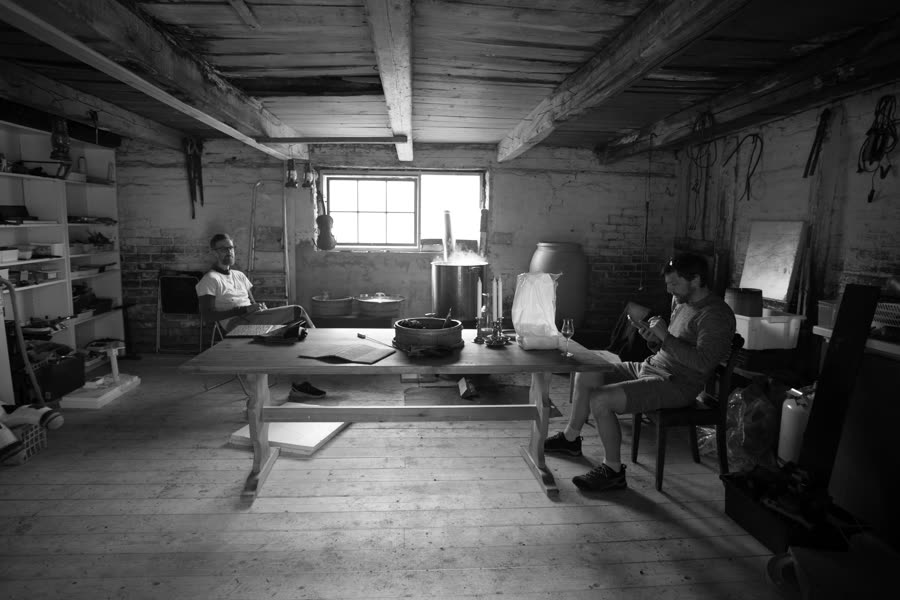
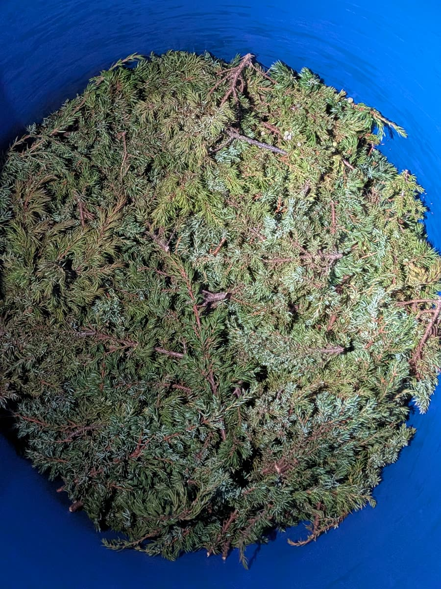
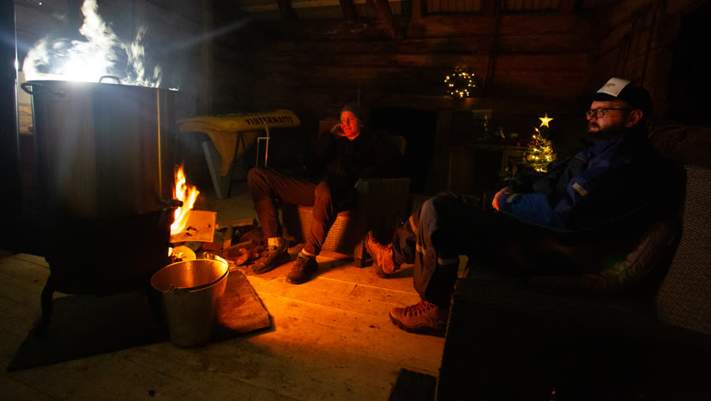
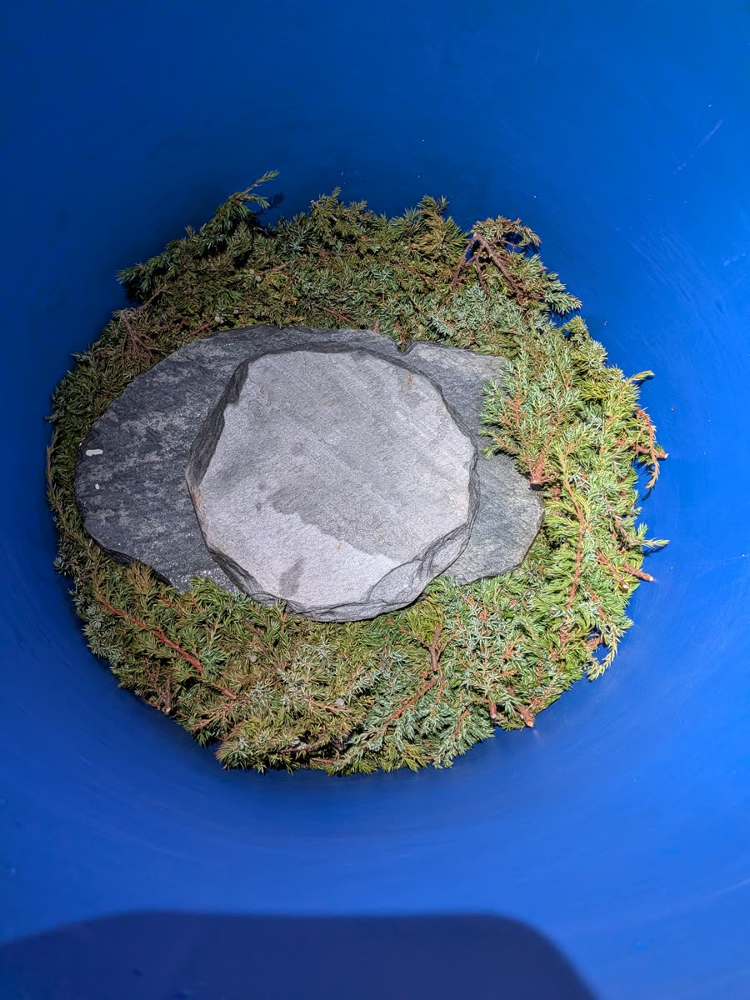
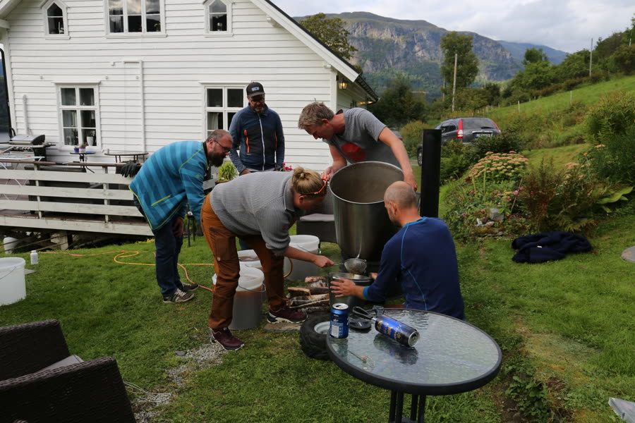
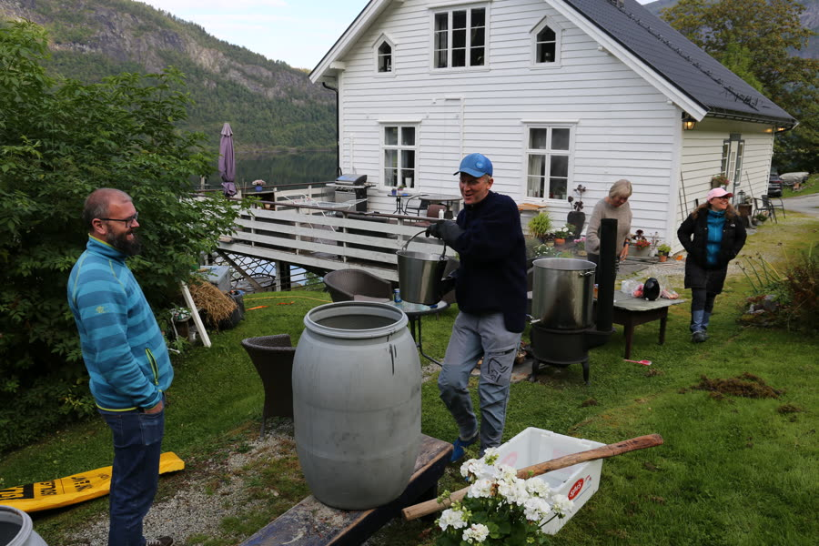
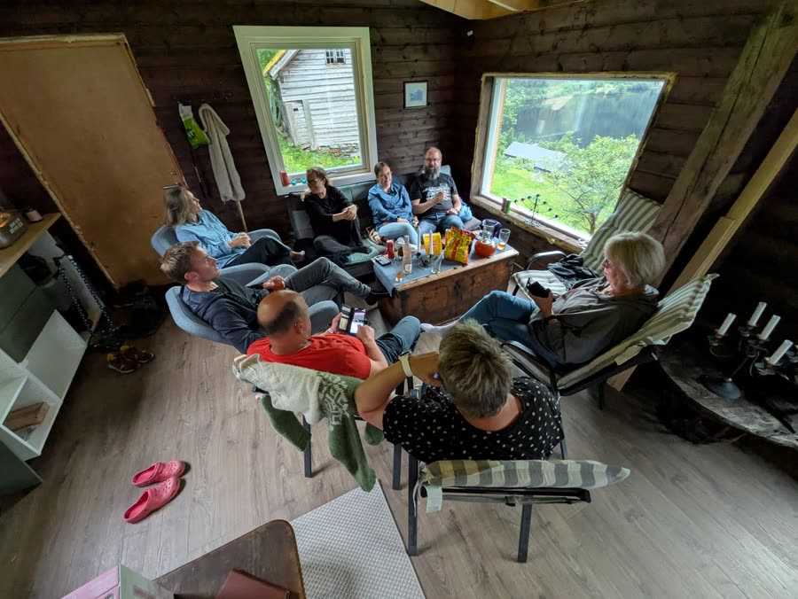
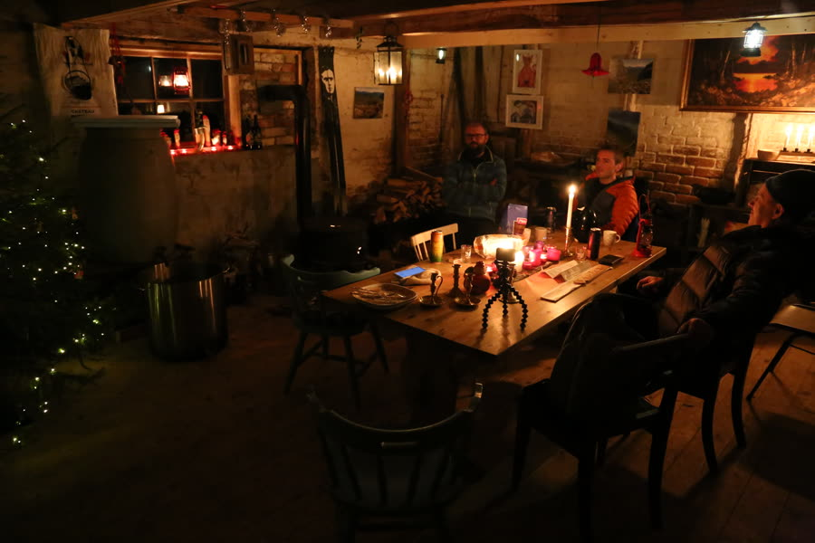
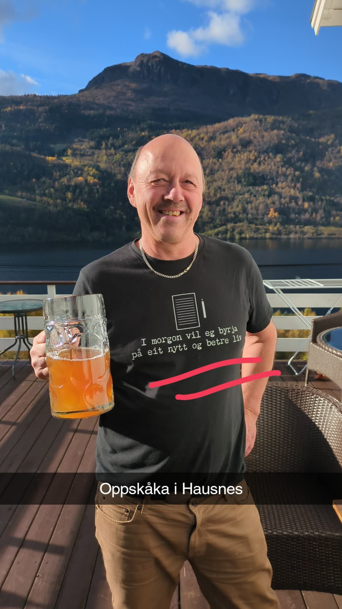

Arven
Lært ved kjelen, ikkje frå ei bok
I Hardanger og på Voss har folk brygga sitt eige øl i hundrevis av år. Ølet var ein del av høgtidene, av jola, bryllaupa og gravøla, og kvar gard hadde sin eigen kveik og si eiga oppskrift.
Me lærte det av far min, som lærte det av far sin, som lærte det av far sin. Det meste sit i hendene og i nasen, og vert gjeve vidare ved at me står saman ved kjelen ein heil dag.
I dag bryggar Hausnesbrogg oftast saman med min gode kompis Svein Ringheim og bryggeriet hans, Mjøstølen Bryggeri. Ølet vert brygga fleire gonger i året, gjerne til jol, påske, sommar og haust. Kvart brygg får sitt eige namn og sin eigen etikett.
«Denna va' de heldige med.» Mora til ein av bryggekarane


Det som går i kjelen
Fem ting, og ein heil dag
-
Brakje
Einer, henta på Olastøl, i Espelandsdalen, Kinsarvik, Osa og Bønes. Gjev ølet den skogsfriske smaken.
-
Kveik
Gamal gardsgjær frå Voss, mellom anna Rivenes-kveik frå Dyrvedalen. Han likar det varmt og jobbar fort.
-
Malt
Mest pilsnermalt, gjerne 25–30 kg. Av og til med munich- eller pale ale-malt for meir fylde.
-
Humle
Ein moderne vri på det gamle: Cascade og Amarillo, av og til ein skvett Chinook.
-
Vatn
Frå gamlebrønnen eller nyebrønnen i Hausnes. Bryggjarane meiner det smakar skilnad.
Prosessen
Frå brakje til oppskåka
Ein bryggedag startar tidleg og sluttar seint. Slik går det føre seg, steg for steg.
-

Steg 1
Hente brakje
Før bryggedagen går me til fjells etter brakje, som er det gamle ordet for einer. Me skjer friske, grøne kvistar. Kvar plass gjev sin eigen smak, og difor står det alltid kvar brakjen kjem frå på etiketten.
-
Steg 2
Fyre opp og lage brakjelåg
Vatnet frå brønnen går i den store kjelen over open eld. Brakjen kokar med, og vatnet blir til brakjelåg, eit gyllent einerte som er grunnlaget for heile ølet. Elden må passast heile dagen.
-

Steg 3
Mesking
Malten blir rørt ut i den varme brakjelågen. Så står det og trekkjer, og sukkeret i kornet løyser seg i vatnet. Dette er tida for å setje seg ved elden og ta ein prat.
-

Steg 4
Silting gjennom brakje
I botnen av silkaret legg me eit tjukt lag brakje, med ein stein oppå som held det på plass. Mesken renn sakte gjennom, og einerkvistane fungerer som eit naturleg filter. Det som kjem ut, er søt vørter.
-

Steg 5
Koking med humle
Vørteren går attende i kjelen og kokar over elden, og humlen går oppi. Om sommaren flyttar me heile bryggeriet ut på tunet. Det er alltid litt vørter som ikkje får plass i kjelen, og det har blitt til eigne eksperiment, som Granvinsgraps.
-

Steg 6
Kjøling og kveik
Når vørteren er avkjølt til han er handvarm, blir kveiken tilsett, og alt går over i gjæringstønna. Kveik likar det varmt og jobbar fort. Eit par dagar etter kan ølet vere klart til å takast.
-

Steg 7
Oppskåka
Ei veke eller to etter bryggedagen er det oppskåka: ølet blir smaka og delt ut, og venner og familie samlast. Først då veit me om det vart eit brygg å hugse.


Brygga
Alle brygga frå Hausnesbrogg
Kvart brygg har sitt eige namn og sin eigen etikett. Trykk på eit brygg for å lese meir.
Alle brygga ligg òg på Untappd ↗